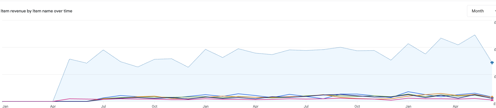

SEO optimization project focused on increasing online visibility, improving click-through rates, and attracting more qualified traffic through strategic SEO enhancements.
Search Visibility
Organic Clicks
Conversion Opportunities
This analytics data highlights significant increases in sales and conversions driven by targeted SEO strategies, technical website improvements, and sustained organic traffic growth.

By improving technical SEO, optimizing on-page elements, and refining keyword targeting, the website achieved stronger search visibility, increased organic clicks, and improved opportunities for business growth through organic search.